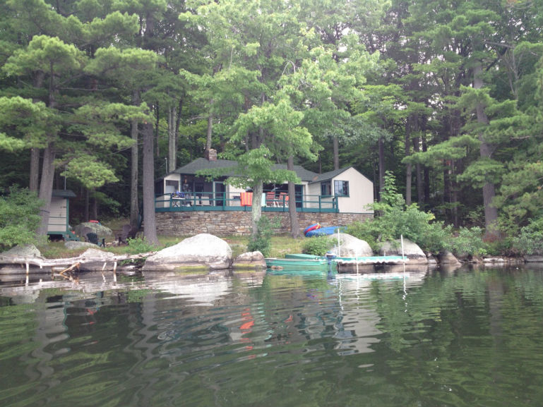

The Anchorage at Auger Lake…

The Camp is located on the shore of Auger Lake, or Auger Pond as some locals still call it. Nestled between Lake Champlain and the Adirondacks, it's location allows easy access to both the civilized and not so civilized world.
Come and take a look around at what this camp has to offer. It's rustic charm and peaceful evenings will not cease to delight. Check our availability, or request informaiton.
The camp has been in the family for over three generations, and has been loved by many family, friends, and neighbors over the years.
The camp and the surrounding area have much to offer. Come explore and stay a while.